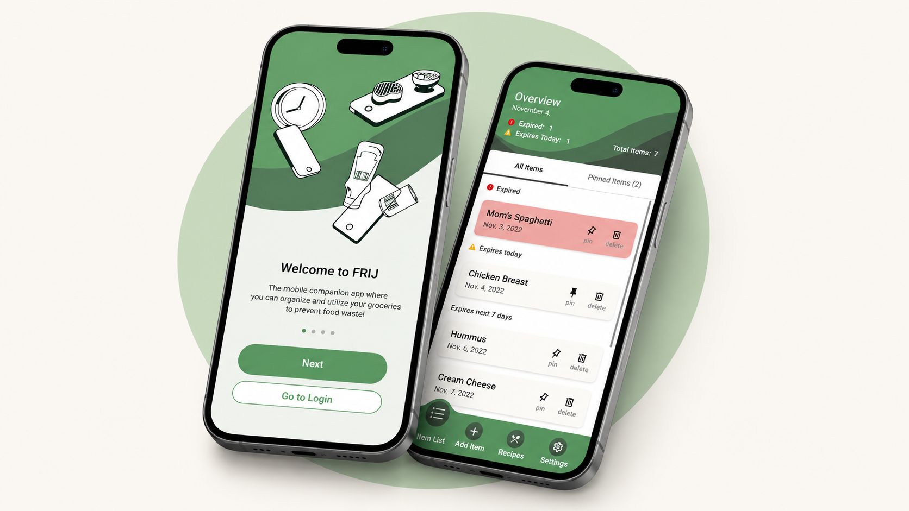
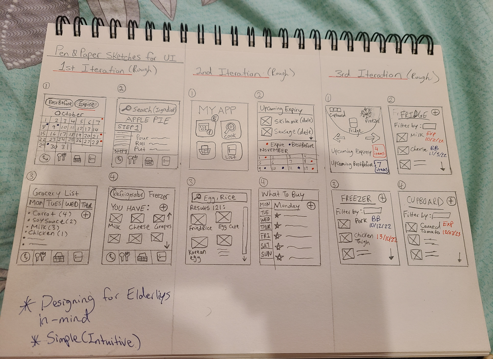
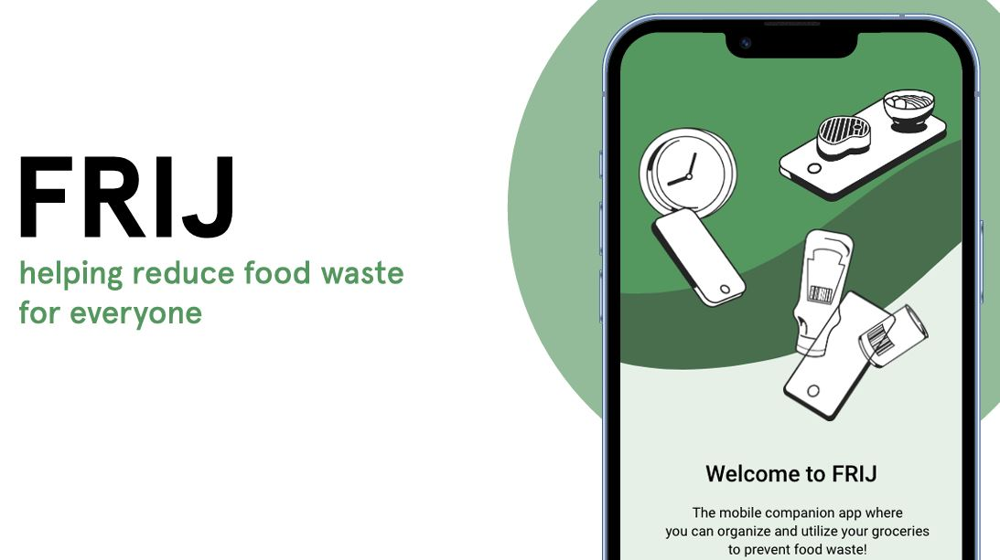
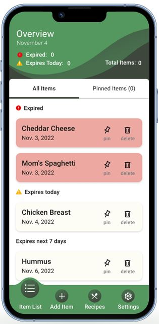
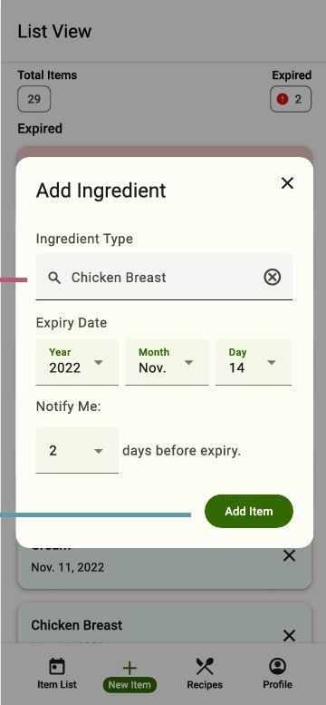
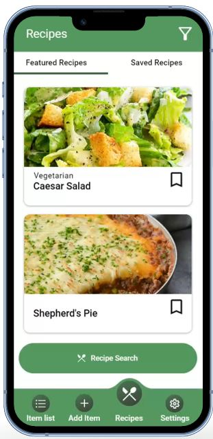
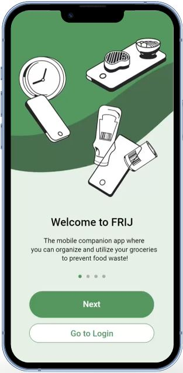

UI/UX Design • Accessibility • Mobile App Prototype
FRIJ
Helping users reduce food waste through accessible food tracking, expiry reminders, and recipe discovery.

Project Overview
Designing a supportive food-management experience for older adults.
FRIJ is a mobile app concept designed to help users scan, track, and organize the groceries they buy, while also offering recipe suggestions based on ingredients they already have at home.
The project began with a focus on elderly users who may experience memory, mobility, or confidence barriers when managing food and groceries. Our goal was to design a simple, accessible, and easy-to-understand interface that helps users reduce food waste, remember what they have, and feel more independent in their daily food routines.
Process Video
Show the full design journey from research to final prototype.
This process video summarizes our team’s design journey, from identifying user needs and sketching early concepts to developing, testing, and refining the final FRIJ mobile app prototype.
The Challenge
Helping seniors confidently manage the food they already have.
Many seniors value independence when grocery shopping and cooking, but physical limitations, memory challenges, and unfamiliarity with digital tools can make food management more difficult.
Through our research, we found that some users had trouble remembering what food they had, how long items had been in the fridge, and whether certain ingredients were still safe to eat.
Design Question
How might we support memory, confidence, and independence?
How might we help older adults confidently track, remember, and use the food they already have at home?
Research Insights
Understanding the barriers behind everyday food management.
Our early research focused on seniors with physical or cognitive limitations who needed assistance with food, groceries, and meal planning.
Technology Confidence
If an app feels confusing or unfamiliar, older users may avoid it entirely.
Memory Support
Users may forget what food is available, especially with perishable items and leftovers.
Step-by-Step Guidance
Clear instructions and visible actions help users feel more comfortable learning a new system.
Physical Limitations
Food planning can reduce unnecessary grocery trips and support daily independence.
Food Waste
Expiry reminders and recipe suggestions can help users make better use of ingredients before they go bad.
Target Users
Designing for seniors while keeping the product useful for broader audiences.
Although FRIJ could support many users, we designed the experience with older adults in mind. Our primary user was an independent senior who wanted to manage groceries and meals, but occasionally struggled with remembering food items, reading small interface details, or navigating unfamiliar app flows.
We also considered secondary users such as students or busy adults who may forget expiry dates due to packed schedules.
Design Goals
- Reduce cognitive load by avoiding unnecessary clutter.
- Support memory through reminders, sorted lists, and clear labels.
- Create clear visual hierarchy through larger text and consistent affordances.
- Encourage food usage through recipe suggestions, not just tracking.
Ideation & Early Sketching
Prioritizing clarity over complexity.
We began with pen-and-paper sketches to explore different ways users could add, view, and organize food items. Early ideas included calendar views, list views, fridge/freezer/cupboard categories, barcode scanning, and recipe search.
Through these iterations, we realized that calendar-based systems could feel visually overwhelming. We moved toward a simpler list-based structure where items could be grouped by urgency.

Interaction Framework
A simple system built around three core actions.
The FRIJ experience was designed to help users move from remembering food, to tracking it, to actually using it.
Add Food Items
Users can add ingredients through barcode scanning, receipt scanning, or manual entry.
Track Expiry Dates
Items are sorted by urgency so expired and soon-to-expire food appears first.
Find Recipes
Recipe suggestions help users create meals with ingredients they already own.
Set Reminders
Users can choose when they want to be reminded before an item expires.
Review Details
Item detail screens give users clearer summaries and recipe options.
Visual & Interface Direction
Designing with accessibility and clarity at the center.
Because our target audience included older adults, we avoided complex app conventions and focused on simple navigation, tapping, and vertical scrolling.
The final interface used a clean green-and-white direction to connect the app to food, freshness, and sustainability. Larger text, direct labels, visible action buttons, and status indicators helped users understand the system without relying on hidden gestures or advanced mobile knowledge.


Key Features
Turning food tracking into a supportive daily routine.
The final prototype combines expiry tracking, guided item entry, recipe discovery, and onboarding to help users reduce food waste while feeling more independent.

Track by Urgency
A quick summary of total items, expired items, and food expiring soon. Urgent items are placed higher in the list.

Scan or Manual Entry
Users can scan packaged groceries or manually enter leftovers and homemade meals with reminder settings.

Use Existing Food
Recipe suggestions help users turn available ingredients into meals before they expire.

Guided Learning
Simple visuals and short explanations introduce key features for less confident technology users.
Usability Testing
Testing showed that simplicity still needed stronger guidance.
We tested the prototype using Think Out Loud, Constructive Interactive Method, screen recording, in-person testing, remote testing, and follow-up questions. Our tasks included adding a scanned item, adding a meal manually, pinning an item, deleting an item, and finding a recipe using specific criteria.
Testing revealed that some users struggled with the recipe finder, overlooked the scan function, or were unsure how to expand the pinned item section.
Key Issues
- Small dates and recipe text affected readability.
- Some users needed clearer instructions in the recipe finder.
- Visual affordances such as dropdowns were not always obvious.
- Inconsistent icons and contrast affected visual clarity.
Refinements
Improving clarity, affordances, error prevention, and copywriting.
After testing, we grouped the main design issues into four categories and proposed refinements to make the app more understandable and supportive.
Visual Clarity
Increase font sizes, strengthen contrast, and use warning icons consistently.
Affordance Clarity
Improve visibility for interactive elements such as pinned lists and filters.
Error Prevention
Disable confirmation buttons until required fields are completed.
Copywriting
Replace unclear labels such as “Add Ingredient” with clearer actions like “Confirm Scan Results.”
Onboarding
Add a guided introduction to help new users understand the main features.
Reflection
Accessible design is about confidence, not just visibility.
This project taught me how important it is to design with accessibility, clarity, and real user behaviour in mind. A feature may seem simple to a designer, but testing showed that labels, icons, contrast, and feedback can completely change whether a user understands the interface.
Working on FRIJ helped me develop stronger skills in user research, visual communication, prototyping, and usability testing. The biggest takeaway was that accessible design is not only about making things easier to see or tap; it is about creating a system that gives users confidence, reduces uncertainty, and helps them complete meaningful tasks with less frustration.